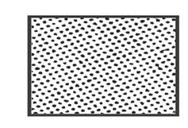
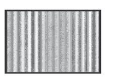
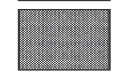
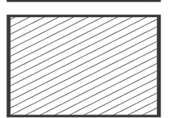
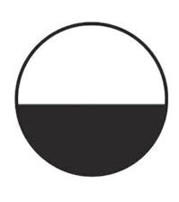
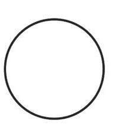
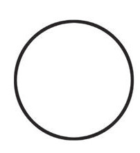
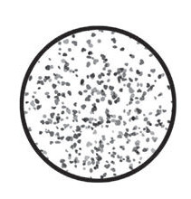

Kielelezo namba 24: Uwasilishwaji tofautitofauti wa unamu
Vilevile, unamu na kivuli katika uchoraji vinaweza kuathiri mizania ya picha kama inavyoonekana kwenye Kielelezo namba 25 na 26.Kielelezo namba 25 kinaonesha jinsi kivuli kizito kilichopo upande wa chini wa umbo la kushoto kilivyosababisha unamu wa picha hiyo kuelemea upande huo.


Kielelezo namba 25: Unamu uliosababishwa na kivuli kizito ulivyoathiri mizania ya picha
Kielelezo namba 26 kinaonesha jinsi kivuli chepesi kilichopo kwenye umbo la kulia kilivyosababisha unamu wa picha hiyo kuelemea upande wa kulia.


Kielelezo namba 26: Unamu uliosababishwa na kivuli chepesi ulivyoathiri mizania ya picha